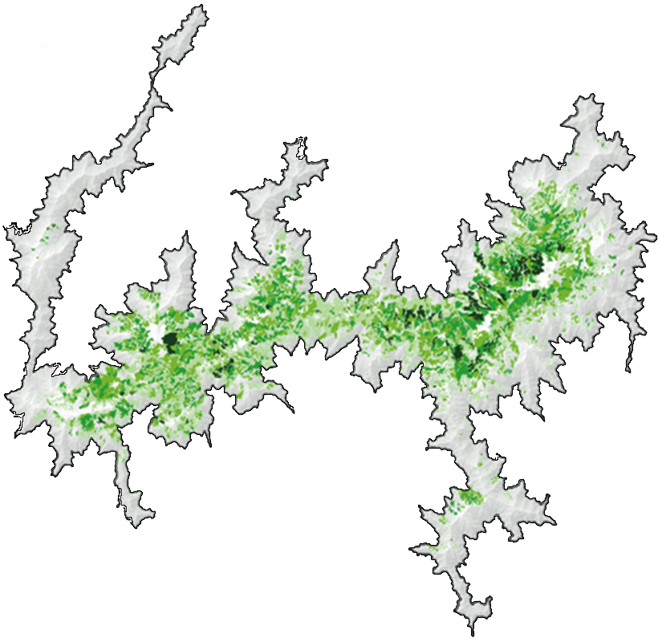

0
들어가며
이 비의 이름은 장마가 아닌 기후위기입니다
“지구온난화가 현재 속도로 지속된다면 2030년과 2052년 사이 지구 기온이 산업화 이전 수준과 비교해 1.5도가량 상승할 가능성이 높다. 많은 지역에서 극한 기온의 온난화, 일부 지역에서 호우 빈도와 강도의 증가, 일부 지역에서 가뭄 강도 또는 빈도의 증가 발생이 예상된다.”
기후변화에 관한 정부 간 협의체(IPCC)가 2018년 발표한 ‘지구온난화 1.5도 특별보고서’에 적힌 내용이다. 어렵게 쓰여 있지만 지구 기온 상승폭이 1.5도 이상이 될 경우 어떤 지역에서는 기온이 크게 오르고, 어떤 지역에서는 비가 매우 많이 내리게 되는 한편, 또 다른 지역에서는 가뭄이 더 심해진다는 경고다.
2020년은 매 계절마다 이상기후 현상이 발생했다. 먼저 겨울엔 이상고온 현상이 나타났다. 최고기온(8.3도)과 최저기온(-1.4도), 평균기온(3.1)이 모두 1973년 이래 가장 높았다. 봄에는 이상고온과 이상저온 현상이 동시에 나타났다.
‘기록적 폭염’이 예고됐던 여름에도 어김없이 이상기후 현상이 나타났다. 그런데 폭염이 아닌 역대 최장 기간의 장마였다. 중부지방에 6월24일부터 내리기 시작한 비는 8월16일에서야 그쳤다. 기간은 역대 최장(54일)이었고, 내린 비의 양(920㎜)역시 역대 두 번째로 많았다.
폭우로 인해 섬진강 제방이 유실된 전북 남원시 금지면 귀석리 금곡교 인근 마을이 9일 오전 물에 잠겨있다
올해 장마는 ‘기존에 없던 패턴’으로 나타났다. 장마는 따뜻하고 습한 성질의 북태평양고기압이 정체전선(장마전선)을 위로 밀어올리면서 끝난다.
그런데 올해는 한국에 찬 공기가 정체하는 기압 배치가 장기간 지속되면서, 이 고기압이 힘을 쓰지 못했다. 시베리아 지역에서 발생한, 대기 흐름을 정체시키는 ‘블로킹(온난 고기압)’ 현상과, 북극의 이상고온 현상 등이 발생하면서 장기간의 장마가 지속됐다.
한국 연평균 기온 편차 추이(단위: ℃)
1973년
연평균 기온 12℃
평년 대비 편차 1.5℃
출처: 기상청 기상연보연평균 편차는 1973년부터 2019년까지 50년간 평균 기온 12.53도 대비 해당 연도의 평균 기온 편차를 의미한다. 2019년도의 전국 평균기온은 13.5℃로 최근 10년(2010~2019년) 평균보다 0.5℃ 높았고, 평년(1981~2010년)보다 1.0℃ 높았다. 이는 1973년 이래(45년간) 최고 2위에 해당하는 값이다.
기후변화가 현 추세대로 지속된다면, 이번 장마와 같은 예측하기 어려운, ‘기존에 없던 패턴’의 이상기후 현상은 앞으로도 계속 나타날 것이다.
경향신문은 올해 누군가에겐 낯설게만 느껴지는 ‘기후변화’를 직접 목격하고 경험한 ‘기후변화의 증인들’을 만나 이야기를 들었다.
각종 보고서상의 ‘숫자’로 존재하던 것들이 이들에겐 지금 눈앞에서 벌어지는 위기이자 현실이었다.
김혜숙씨(61)는 해녀다. 중학생 때인 15살에 처음 물질을 배워 17살에는 해녀가 직업이 됐다. 그는 제주도 옆의 작은 섬, 우도에서 나고 자랐지만 충청도와 전라도 앞바다까지 가리지 않고 물질을 했다.
45년이 흘렀다. 그동안 김씨의 작업 방식이나 장비는 크게 변하지 않았다. 하나 바뀐 것이 있다면 김씨의 일터, 바닷속의 상황이다.
김씨는 하루만에 뿔소라 100㎏을 채취했다. 다른 해녀들에 비해 손에 꼽힐 정도로 수확량이 많은 편이었는데도, 김씨는 좋아하지 않았다. 소라가 이렇게 많이, 수월하게 잡히는 것은 감태가 줄어 소라를 찾기가 쉬워졌기 때문이었다.
“예전엔 톳 크기가 우리 키만치 해가지고 포대에 담지도 않고 바닥에 펼쳐놓고 등에 지고 다니고 그랬는데, 요즘엔 손바닥만해.
또 감태가 봄이 되면 새싹이 나가지고 파릇파릇하게 바다속을 다 덮었어. 그 감태들 밑에 소라가 숨어 지내는데, 감태가 너무 많아서 소라를 찾기가 힘들었지. 이젠 감태가 없으니까 소라들이 위에서 그냥 뒹굴고 있는 거야. 올해 많이 잡았다고 좋아할 상황은 아닌 것 같애.”
- 김혜숙(60, 해녀)
김씨는 하루만에 뿔소라 100㎏을 채취했다. 다른 해녀들에 비해 손에 꼽힐 정도로 수확량이 많은 편이었는데도, 김씨는 좋아하지 않았다. 소라가 이렇게 많이, 수월하게 잡히는 것은 감태가 줄어 소라를 찾기가 쉬워졌기 때문이었다.
바다 온도 상승은 통계로도 확인된다. 기상청에 따르면 한국 바다의 겨울철 수온은 1998년 이후 연평균 0.11도씩 상승했다. 2010년 이후로는 0.21도씩 높아져 상승세가 더 가팔라졌다. 역대 가장 따뜻했던 겨울로 기록된 이번 겨울, 해양 수온은 13도를 기록해 1998년보다 2.2도 올랐다.
수중에서 1도의 변화는 육상에서의 10도와 맞먹는다. 30년간 2도의 변화가 있었다는 것은 엄청난 변화다.
제주 바다의 아열대화는 빠르게 진행되고 있다.
감태와 톳, 모자반이 사라지고 낯선 것들이 바다 속을 메워갔다. 대만이나 필리핀, 호주 같은 열대 해역에 서식하는 그물코돌산호나 거품돌산호 같은 것들이다.
그물코돌산호는 1990년대 말까지는 전문 다이버들에게만 가끔 목격될 정도로 희귀했다. 하지만 2000년대 들어 급속하게 퍼졌고, 이제는 제주도 전 연안에 서식 중이다.
국립수산과학원 제주수산연구소의 고준철 해양수산연구사는 2014년 2월부터 제주 바다에 서식하는 아열대 지표종인 그물코돌산호 하나를 지정해 6년째 관찰 중이다.
처음 관찰을 시작했을 때 6.6㎝에 불과했던 이 그물코돌산호는 지난해 27㎝가 됐다. 제주의 바다가 따뜻해지자 연평균 4㎝씩 빠르게 성장한 것이다.
아열대 지표종 그물코돌산호 연도별 직경
※출처: 국립수산과학원 제주수산연구소
열대 해역인 오키나와, 필리핀, 대만에서 살던 열대종들은 이제 우리나라에서 가장 남쪽인 제주도 연안까지 서식중이다. 지난 10년간 제주도 연안 어획실험 결과 아열대 어종의 출현빈도는 52%로 절반을 넘어섰다.
바닷속은 화려해졌다. 노란 바탕에 새파란 줄무늬가 있는 청줄돔, 분홍멍게 등 색깔도 모양도 화려한 이 생물들은 모두 과거엔 희귀했지만 이젠 흔해진 아열대 어종들이다.
열대 해역인 오키나와, 필리핀, 대만에서 살던 열대종들은 이제 우리나라에서 가장 남쪽인 제주도 연안까지 서식중이다. 지난 10년간 제주도 연안 어획실험 결과 아열대 어종의 출현빈도는 52%로 절반을 넘어섰다.
고 연구사는 “바다도 겨울에 좀 추워야 찬 기류가 빠져나가면서 따뜻한 기류가 올라와 회복이 되는데, 올겨울도 제주도는 눈도 안 오고 따뜻했다. 그런 변동이 너무 심하다”고 말했다. 기후변화로 ‘변동성’이 증가하면서 계절마다 어민들이 해왔던 작업이 차질을 빚게 됐다는 의미다.
기후변화로 인한 바다 수온 상승이 지속된다면, 한국의 바다는 어떤 모습으로 바뀔까.
고 연구사가 우리의 질문에 대답했다.
“기후변화가 앞으로도 계속 이어진다면 30~50년 후 한국의 바다는 대만의 바다 환경처럼 바뀔 수 있다고 조심스레 예측합니다. 만약 그렇게 된다면 좋은 것이 아닙니다. 전 세계적으로 기온이 최근에 비해 4~5도 오른 상태일 것이기 때문이죠.”
30년의 산장생활, “어느날 풍경이 낯설게 보였다”
지리산국립공원 산청분소 직원인 민병태씨는 30년간 지리산 치밭목대피소의 산장관리인이었다. 수십년간 산 한가운데서 살았던 그는 지리산, 그중에서도 인간의 접근이 쉽지 않은 아고산대 생태계 변화를 가까이서 목격한 몇 안 되는 증인이다.
아고산대는 따뜻한 곳에서 자라는 활엽수들이 있는 온대림과, 나무가 더 이상 생존할 수 없는 고산지대 사이에 위치한 식생대다. 연평균 기온은 4~5도 이하다.
민씨가 기억하는 아고산대는 상록침엽수의 주 서식지이기도 하다. 상록침엽수에도 여러 종류가 있지만, 지리산에 집중적으로 분포하고 있는 것은 구상나무다. 크리스마스 트리로도 유명한 구상나무는 한국에만 서식한다.
지리산 아고산대의 침엽수 분포 면적 41.88㎢ 중 99.84%가 구상나무의 서식지다. 지금까지는 그렇다.
지리산 고산지대 구상나무의 분포 지도
※출처: 산림청 / 국립산림과학원
5~10%10~25%25~50%50%~
고도가 높고 평균 기온이 낮은 곳에서 구상나무의 밀도가 높은 것을 알 수 있다.
산의 색은 그 색을 채우던 것들이 줄어들면서 조금씩 변하기 시작했다. 그렇게 오랫동안 산에 살았던 민씨도 산의 색깔이 ‘옅게’ 변하는 것을 눈치채는 덴 오랜 시간이 걸렸다.
“전문 지식도 없고, 또 계속 보던 풍경이다 보니 오히려 변화의 심각함을 잘 못 느꼈어요. ‘뭔가 이상한데’ 싶으면서도 감이 잘 안 왔던 거죠.”
그러다 문득 매일 보던 풍경이 낯설게 느껴진 날이 있었다.
“겨울에 숲의 푸른색이 없어졌어요. 회색지대로 변한 겁니다. ‘어? 뭐지?’ 했어요. 예전엔 숲이 시커멀 정도로 전체가 다 침엽수였는데, 지금은 활엽수들이 치고 올라와서…. 탈모현상처럼 보여요. 다 녹색이 됐어요.”
- 민병태씨(64, 지리산국립공원 산청분소 직원)
해발 1320m의 임걸령까지 가는 길에 구상나무 고사목들이 모여있는 곳이 나왔다. 한때 소규모로나마 군락을 이뤘던 것으로 추정되는 나무들은 다양한 형태로 죽어있었다.
누군가 나무를 손가락으로 집어 땅에서 쏙 뽑아낸 것처럼 뿌리가 통째로 뽑힌 채 죽은 나무가 있는가 하면, 어떤 나무는 뿌리는 박혀 있으나 중간이 뚝 부러져 있었다.
2월 발간된 국립공원연구원의 ‘지리산 아고산대 침엽수 고사개체 공간정보 구축 및 입지환경 분석’ 보고서에는 지리산 반야봉·영신봉·천왕봉의 세 지역 모두 최근 10여년간 고사목 개체수가 2~5배 이상 증가한 것으로 나타났다”고 밝히고 있다.
사진 중앙의 핸들을 잡고 좌우로 이동하며 좌우 사진을 비교해보세요
1990년대(좌), 2010년대(우) 지리산 아고산 지역 침엽수림의 면적 변화. 지리산의 경우 면적의 14.6%이 감소했다.
한라산 진달래밭 구상나무림의 2009년 모습(좌) 2016년모습(우)
2016년 현장사진에서 하얗게 고사한 구상나무의 모습이 보인다.
2월 발간된 국립공원연구원의 ‘지리산 아고산대 침엽수 고사개체 공간정보 구축 및 입지환경 분석’ 보고서에는 지리산 반야봉·영신봉·천왕봉의 세 지역 모두 최근 10여년간 고사목 개체수가 2~5배 이상 증가한 것으로 나타났다”고 밝히고 있다.
연구에 참여한 국립공원연구원 이나연 연구위원은 “전 세계적으로 고지대에 살고 있는 구상나무 같은 ‘바늘잎’ 나무들이 많이 죽어가고 있다”면서 “지구의 기후변화를 원인으로 추정하고 있다”고 했다.
사실 나무는 여러 원인으로 고사할 수 있다. 태풍이나 강풍에 꺾일 수도 있고, 자연적으로 수명이 다할 수도 있다. 최근 10여년간 가속화되고 있는 구상나무 고사의 주된 원인이 ‘기후변화’라는 것을 구체적으로 어떻게 증명할 수 있을까.
전북 지대별 연평균 기온 추이
※출처: 국립공원연구원
이 연구위원은 ‘온도 상승’을 들었다. 이 연구위원에 따르면 전라북도 남원의 연평균 기온은 2012년 11.9도였는데, 2019년 13.3도로 1.3도가 올랐다. 같은 기간, 고지대인 지리산 반야봉 지역의 연평균 기온은 4.2도에서 7.7도로 상승했다.
“겨울철 눈 녹은 물이 토양으로 흡수되면서 나무의 생육을 활성화시키는데, (눈의 양이 줄면서) 나무들이 한창 생육을 해야 할 시기에 수분이 부족해졌다”고 말했다.
그는 “동아시아 지역을 중심으로 태풍의 빈도나 강도가 높아진 것도 지리산 나무들에 영향을 미치고 있다”고 했다. 구상나무는 뿌리를 수직으로 깊게 박아내리는 대신 얇은 뿌리를 수평으로 퍼뜨리며 자라난다. 토양의 깊이가 얕고, 암반지대가 많은 아고산대 환경에 버틸 수 있게 발달한 뿌리다. 하지만 따뜻하고 건조해진 환경에서 이런 뿌리는 쉽게 뽑혀 버리고 만다.

왜 우리는 구상나무의 죽음을 심각하게 받아들여야 하는 것일까
이 연구위원은 “식물의 변화는 수백년, 수천년에 걸쳐 일어나는데, 현재의 변화는 인간의 ‘인위적인’ 활동으로 인해 (지구) 온도가 변하고 있는 상황에서 나타난 것이라 자연이 스스로 변화하는 속도보다 훨씬 빠르다”고 지적했다.
“구상나무의 고사는 단순히 침엽수에서 낙엽활엽수로 ‘세대교체’가 되는 게 아니라, 생태계 자체가 유지될 수 있는가 없는가 하는 부분으로 봐야 합니다.”
산불의 세가지 조건 불씨, 연료, 기상…기상은 통제할 수 없다
산불이 나는 데는 몇 가지 조건이 필요하다. 먼저 불씨가 있어야 한다. 이것은 대체로 인간이 만든다. 국내에서 발생하는 산불은 대부분 인간의 실수에 의한 실화다. 불씨가 생겼다면 그것을 댕길 연료가 있어야 한다. 산불의 연료는 나무와 낙엽이다.
마지막 조건은 기상이다. 바람이 얼마나 세게 부는지, 날이 얼마나 건조한지에 따라 ‘불의 크기’가 결정된다. 낙엽에 떨어진 불씨 하나가 작은 산불에 그칠지, 생명을 위협하는 대형 재난으로 커질지는 전적으로 기상 조건에 달렸다.
이 세 가지 조건을 인간이 통제할 수 있는 것과 없는 것으로 나눠보면 이렇다. 불의 시작점이 되는 인간의 실수는 ‘어느 정도’까진 통제할 수 있다. 연료는 그보다 조금 더 적극적인 통제가 필요하다. 나무와 나무 사이 간격을 띄워 심는 것, 가지치기를 하는 것, 불에 강한 나무를 심는 것 등은 모두 연료를 통제해 산불을 억제하는 방법이다. 이 두 가지 조건은 완벽하게는 아니더라도, 그나마 통제가 가능한 것들이다.
그런데 기상은 그렇지 않다. 인간이 통제할 수 없다.
“제일 중요한 것은 기상입니다. 건조한 날씨에 부는 강풍이 산불에 가장 영향력이 큰 인자예요.”
산림청 산림항공본부의 김만주 산림항공과장(52·현 산림청 중앙산림재난상황실장)이 말했다. 그는 13년째 산림청에서 산불 대응을 하고 있다. 강원도 원주에 있는 산림항공본부 상황실에서 그를 만났다.
김 과장이 느끼기에 기상 조건들은 점점 ‘불의 크기를 키우는’ 방향으로 변하고 있다. 일단 강수량과 강수일수가 모두 감소하는 추세다.
국내 건조일수 및 강수일수
※출처: 산림청
건조일강수일
눈과 비가 적게 내려 한껏 건조해진 땅에, 높은 기온이 더해지고 있다. 불이 나기 좋은, 그것도 ‘크게 나기’ 좋은 조건이다.
“예전엔 영동지역에 2m씩 눈이 쌓이는 건 흔히 있는 일이었어요. 그런데 지금은 눈 없이 지나가는 겨울이 있을 정도로 적설량이 줄고 있어요. 적설량, 강수량이 큰 영향을 미치는데…
요즘엔 ‘아차하면 대형 산불로 가겠구나’ 하는 불들이, 그런 기상 조건들이 많아진 것 같아요. 전문인력과 헬기 같은 진화 자원들이 늘었음에도 불구하고 대형 산불로 갈 만한 여지들이 많아졌어요.”
- 김만주 산림항공과장(52·현 산림청 중앙산림재난상황실장)
지난해 강원도 동해안에서 일어난 산불은 이러한 기상 조건일 때, 불이 얼마나 순식간에 커질 수 있는지 정확히 보여줬다. 산림항공본부 이상우 운항팀장(50)은 1년여 전 헬기를 몰고 강원도 고성 산불 현장에 도착했을 때의 허무함을 지금도 또렷이 기억한다.
“고성 산불은 새벽에 발생했죠. 일출과 동시에 이륙하라는 지시를 받고 기상이 안 좋은데도 불구하고 정말 어렵게 넘어갔어요. 그런데 막상 저희가 도착했을 땐 그야말로 ‘잔불’만 남아있는 상태였어요. 불이 이미 다 휩쓸고 지나가 탈 만한 게 남아있지 않은 상태였으니까요. 그때 느낀 게, 자연 앞에서 우리가 할 수 있는 게 별로 없구나였어요”
지난해 4월4일 강원 동해안에서 발생한 대형 산불로 1일 속초시의 한 야산이 민둥산으로 변해 있다.
출처: 연합뉴스
대형 산불의 기준은 면적으로는 100㏊ 이상, 시간으로는 24시간 이상, 헬기 대수로는 10대 이상 투입되는 것으로 정의한다.
동해안 산불은 산림 2832㏊를 소실시켰고, 3일간 지속됐으며, 헬기 105대가 투입됐다. 2명이 사망했고, 이재민 1524명, 재산피해 1291억원이 발생했다.
이제는 불이 날 때와 장소의 예측이 불가능하다
산불은 커진 것뿐 아니라 불규칙한 양상도 보이고 있다. 과거엔 지역적으로는 아래에서 시작해 위에서 끝났다. 남부지방에서 보통 그해의 첫 불이 나면, 이후 중부지방, 경기 북부로 이어지다 잦아들었다. 시기적으로는 2월쯤 시작돼 5월 중순이면 끝났다.
지금은 다르다. 어떤 지역에서든, 언제든, 산불이 난다.
“예전엔 3, 4월 달에 50% 넘게 집중되서 산불이 발생했었는데, 요즘은 산불의 연중화라고 할까요.
5월 중순에 아카시아꽃이 피면 산불이 끝난다는 말이 있었죠. 이제는 그런 말이 무색해질 정도로 7, 8월 까지 불을 끄는 사례가 증가하는 것 같습니다.”
- 이상우(50·현 산림항공본부 운항팀장)
1년 열두 달 중 긴장해서 산불 상황을 주시해야 하는 기간이 8개월로 늘어난 것이다. 산불은 ‘연중화’되고 있다.
7~8월에도 산불이 발생할 수 있는 조건이 되자, 이 팀장처럼 헬기를 직접 조종하는 이들은 ‘대기 시간’이 늘었다. 보통 5월 말이면 끝나던 대기는 올해 7월 초에 끝났다. 산불이 대형화되면서 소형 헬기들도 점차 중대형으로 교체되고 있다.
최근 10년 산불 발생 현황
※출처: 산림청
김 과장은 “화세가 소형 헬기가 감당하기 어려울 정도로 점점 커졌다”면서 “예전엔 소형 헬기 2대로도 껐는데, 지금은 그렇게 해선 못 끄는 불들이 많아진 것”이라고 했다.
기후변화로 인한 산불의 대형화, 장기화, 연중화
국립산림과학원 산림방재과 권춘근 박사는 2년 전부터 기후변화 시나리오를 활용해 전 지구와 한반도 산불 발생 패턴을 연구하고 있다. 그는 최근 세계 각국에서 발생한 대형 산불들을 보며 묘한 느낌을 받았다. 그의 연구결과가 하나둘씩 현실화됐기 때문이다.
때문이다. 권 박사의 연구에 따르면 기후변화로 인해 남반구보다 북반구의 기온 상승이 강하며, 아마존 지역의 건조현상이 뚜렷하게 나타나고 있다. 또 기온 상승이 클수록 몽골, 남아프리카, 호주, 아마존, 남아메리카 일부 지역의 산불 위험이 증가했다.
올해 국내 언론에도 여러 차례 보도됐던 호주 산불은 남한보다 넓은 면적을 태운 뒤 수그러들었다. 김 과장에게 호주 산불을 보며 어떤 생각이 들었는지 물었다.
2020년 1월 10일 대형 화재로 불타고 있는 호주 뉴사우우스웨일스 주 산맥의 모습. (Photo by Sam Mooy/Getty Images)
“호주도 원래 그 시기는 산불이 나는 때가 아니거든요. 진화 자원을 아무리 쏟아부어도 진화는 되지 않고, 비가 오지 않아서 탈 것들을 전부 다 태운 후에야 산불이 끝나는 것을 보니, 참 저게 보이지 않는 지구의 기후변화인가….
점점 산불은 대형화되고 있고 우리 사람들이 사는 곳에 가까이 와 있는 것 같다, 그런 느낌을 받습니다.
…앞으로 우리나라도 산불이 일주일 간다, 한달 간다 그렇다고 한다면 더 큰 대형 산불에 대비하는 체계를 갖춰야 하는 게 아닌가 하는 생각이 듭니다.”

이상기후에 배꽃들은 말라죽었다
눈이 한 차례도 내리지 않는 따뜻한 겨울과, 초여름 날씨를 방불케 하는 고온건조한 봄, 한 해에 태풍이 갑자기 7번이나 몰아치는 기후변화의 시대에 농사는 더 이상 단순한 일도, 땀 흘린 만큼 결과가 돌아오는 일도 아니다. 농사는 복잡하고, 또 운에 기대야만 하는 일이 되었다.
전라남도 나주에서 배 농사를 짓는 26년차 농부 노봉주씨(55)도 올해 누구보다 많은 땀을 흘렸다. 하지만 농사는 크게 망쳤다.
노씨의 배밭에는 무슨 일이 있었을까.
나주에서 배 농사를 짓는 노봉주씨가 냉해로 인해 크기가 골프공보다 작고 모양이 찌그러진 기형 배들을 보여주고 있다. 최유진PD
농사를 짓는 사람들에게 봄 날 씨는 무척 중요하다. 특히 배 농가에게 꽃 피는 시기의 온도 변화에 따라서 열매 수정 여부가 결정된다.
지난겨울(2019년 12월~2020년 2월) 전국의 평균기온은 3.1도, 특히 북방산개구리가 이른 산란을 한 1월은 전국에 고온 현상이 나타났다.
1월의 평균기온은 2.8도, 기상관측을 시작한 이래 가장 높았다. 2월에 짧은 추위가 있었지만 대부분 기간은 평년보다 기온이 높았다. 그런 날들이 계속 이어졌다. 3월의 전국 평균기온은 7.9도를 기록했다.
배밭의 배꽃들도 이때 일제히 피었다. 원래 4월 중순쯤에 피어야 하는 꽃들이었다. 그런데 꽃이 피자마자 내내 따뜻하던 기온이 갑자기 뚝 떨어졌다.
“통상적으로 나주 배 꽃의 만개일은 4월15일이라고 했는데, 몇년 전부터 나주는 4월10일 정도에 피었어요. 올해 는 생각지도 않게 기온이 너무 높았죠. 그래서 1주일 이상 빨리 피었어요. 4월3~4일, 1일에 꽃이 피어버린 거예요.
…그리고 바로 기온이 영하 4도, 5도로 내려가서 배 꽃눈이 고사했어요. 그 이후에도 날씨가 안 좋아서, 70~80%는 배가 안 달렸고, 배가 달렸다고 해도 상품으로 쓸 수 있는 배가 아니에요.”
- 노봉주씨(55·26년차 배 농부)
겨울이 따듯했다면, 올해 4월은 유난히 추웠다. 4월 전국 평균기온은 10.9도로, 평년(12.2도)보다 낮았다. 설상가상으로 기온이 떨어진 다음에는 강풍이 불었다. 4월 말 전국에 태풍 수준의 강풍이 불면서 안 그래도 적게 달린 배 열매들이 그대로 바람에 날려 떨어졌다.
금년 봄(2월~4월) 기온 추이
※출처: 농촌진흥청
금년기온평년기온
한달 반째 정부에 냉해 대책을 호소하고 있는 그는 대규모 집회 개최도 준비하고 있다.
노씨가 밭에서 땀 흘리는 일을 멈추고 정부에 대책을 촉구하는 기자회견을 열 무렵, 강원도 철원에 사는 양봉업자 임송빈씨(64)는 벌 110군을 이끌고 아카시아 꽃을 따라 전국을 돌고 있었다.
꽃밭에서 꿀벌이 굶어 죽는 건 처음이었다
임송빈씨(64)는 이동양봉업자다. 이동양봉은 아카시아 꽃이 피는 지역을 따라 순차적으로 이동하며 꿀을 따는 것이다. 보통 5월 8일쯤 꽃이 가장 먼저 피는 남부지방에서 1차 채밀을 시작한 후 5월 중순쯤 중부지방에서 2차, 5월 말 북부지방에서 3차 채밀을 한다.
많은 양봉농가들이 이런 식으로 이동하면서 양봉을 한다. 그런데 올해는 꽃이 정해진 개화시기에 맞춰 피지 않았다. 임씨도 노씨처럼 한 해 농사를 크게 망쳤다.
“딴 해는 아카시아가 꿀이 안 나와도 잡화나, 찔레도 있고 다른 꽃이 있었죠. 그런데 아카시아에서만 안 나오는 게 아니라 모든 꽃에서 꿀이 분비가 안 되는 상태에요.
올해는 어느 지역에 가도 꿀이 나오는 곳이 없었어요. 양봉을 40년을 했는데, 2004년 외국에서 벌레가 들어와 아카시아 나무가 병들었을 때 빼고 이런건 처음 보는 현상입니다.”
- 임송빈(64·40년차 양봉업자)
양봉업 경력 40여년의 임씨가 올해 6월 말까지 딴 아카시아 꿀은 2드럼에 불과하다. 그는 보통 5월 말쯤이면 아카시아 꿀만 20~30드럼씩 땄었다.
올해 같은 흉년이 오면 복구를 하는데도 오랜 시간이 걸린다. 황협주 한국양봉협회장은 “꽃이 피었는데도 벌이 굶어 죽는 것은 처음 봤다”고 했다. 그는 “벌에게 먹이는 설탕을 긴급히 구해서 주기도 했다”고 말했다.
양봉농가의 흉년은 2018년에도 있었지만, 올해는 그때와 비교해도 더 상황이 좋지 않다. 황 회장은 “그때는 안동, 예천, 이런 내륙지방은 괜찮았어요. 그래도 꿀이 한 3만t 이상은 생산됐는데, 올해가 사상 유례없는 해”라고 했다.
최근 10년간 국내 벌꿀 총 생산량
※출처: 한국양봉농업협동조합
한국양봉농업협동조합은 ‘2020년 벌꿀 생산 흉작 원인 분석 및 작황과 지원방안’ 보고서를 발간했다. 보고서는 올해 흉작의 원인으로 4월에 발생한 급격한 저온 현상을 꼽았다. 갑자기 뚝 떨어진 기온이 아카시아 나무 꽃대 생성에 악영향을 미쳤다고 분석한다.
보고서는 “아카시아 나무 꽃대 발육이 예년 대비 50% 수준”이라며 “최근 지구온난화 등 이상기후로 인해 벌꿀 생산을 예측하기 힘든 불규칙한 상황이 발생하고 있고, 앞으로 이러한 추세가 지속될 것으로 예상된다”고 했다.
역대 최악의 흉작을 맞은 강원도 철원의 한 이동양봉 농가에서 꽃에 꿀이 없어 아사 직전의 벌들이 벌통 주위를 맴돌고 있다. 촬영: 최유진PD
사실 노씨와 임씨의 농사는 배꽃과 아카시아 꽃이 ‘원래 피던 때’에만 피었어도, 망치지 않을 수 있었던 것이다.
국립농업과학원 기후변화생태과의 심교문 연구관은 “겨울철이 따뜻하다보니 월동작물과 과수의 생육시기가 빨라졌는데, 그 뒤 4월쯤 온도가 떨어졌다”며 “평상시 같았으면 개화기가 아니어서 피해를 보지 않을 상황에서 피해를 보게 됐다”고 말했다.
기후변화에 따른 이상기후 현상은 앞으로도 더 자주, 더 큰 폭으로 발생할 것으로 보인다. 25년간 “오직 배만” 키웠다는 노씨는 이번 농사를 끝으로 사실상 배를 포기했다.
“이런 자연 재해가 왔을 때 사람이 할 수 있는 일은 별로 없어요. …내년에도 올해와 비슷한 조건이 온다 그러면 저는 그냥 농사를 안하고 포기할 것 같아요.
5
엔딩
비정상이 일상이 될지도 모른다
최근 10년간 국내에서는 과거에 경험해보지 못한 이상기후 현상이 빈번하게 나타났다. 그런데 이런 이상기후 현상이 국내에서만 발생하고 있는 것은 아니다.
기상청에 따르면 지난 3월 브라질 남동부에서는 폭우로 80여명이 사망하거나 실종됐고, 일본 도쿄에서는 32년 만에 1㎝ 이상의 눈이 왔다. 국내 농가들이 냉해를 입었던 지난 4월, 중국 북동부에서는 37년 만에 최대 폭설이 내렸고, 기온이 하루에 20도씩 하강했다.